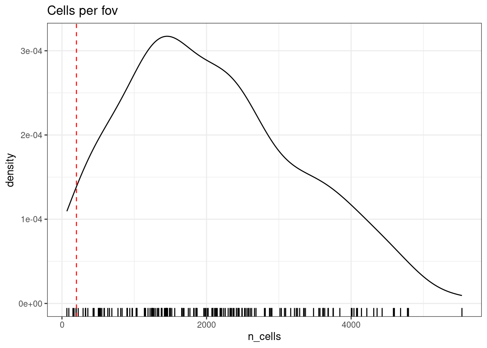
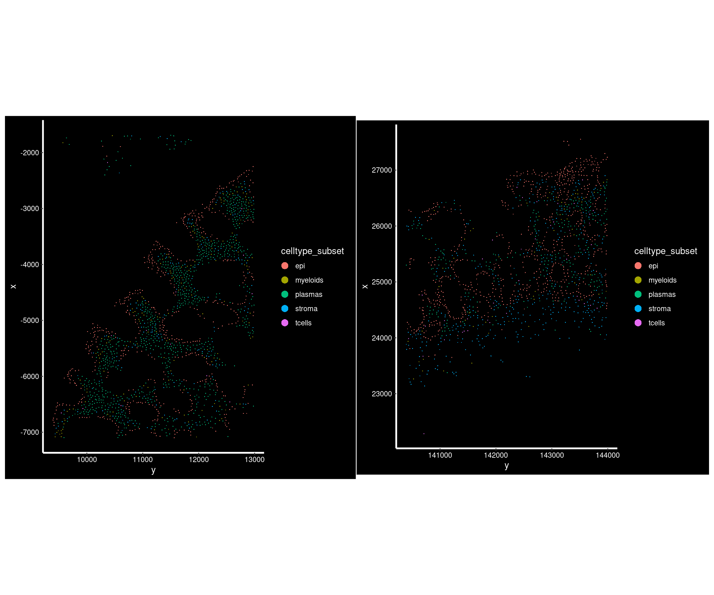
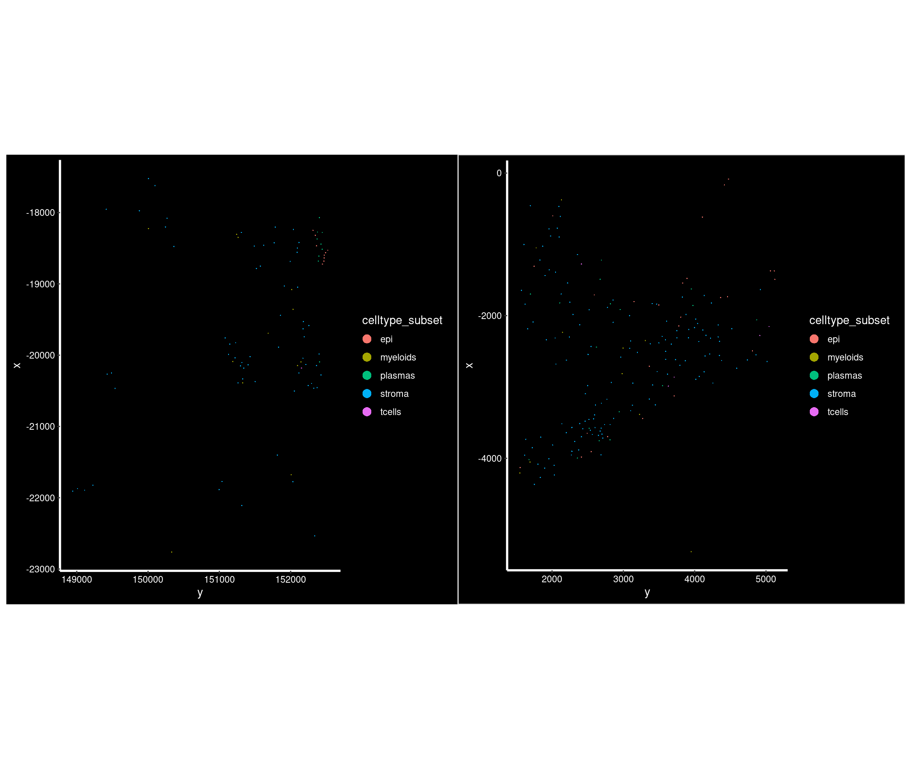
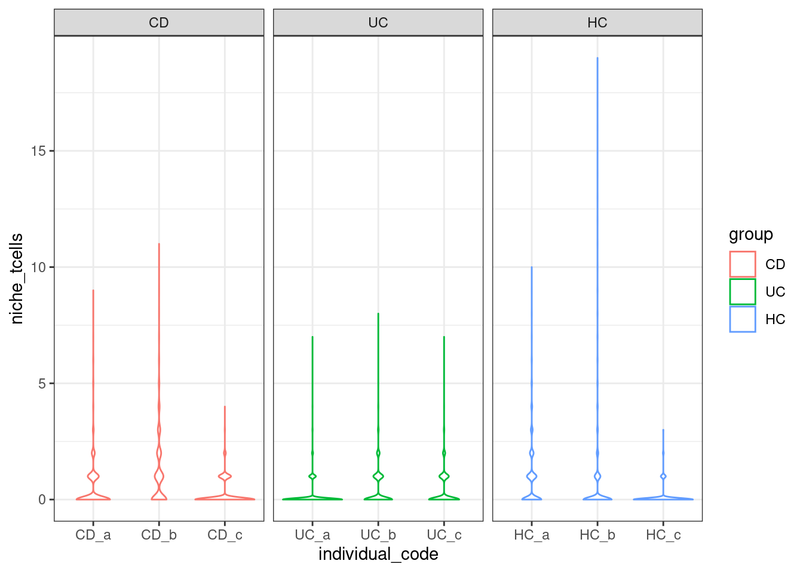
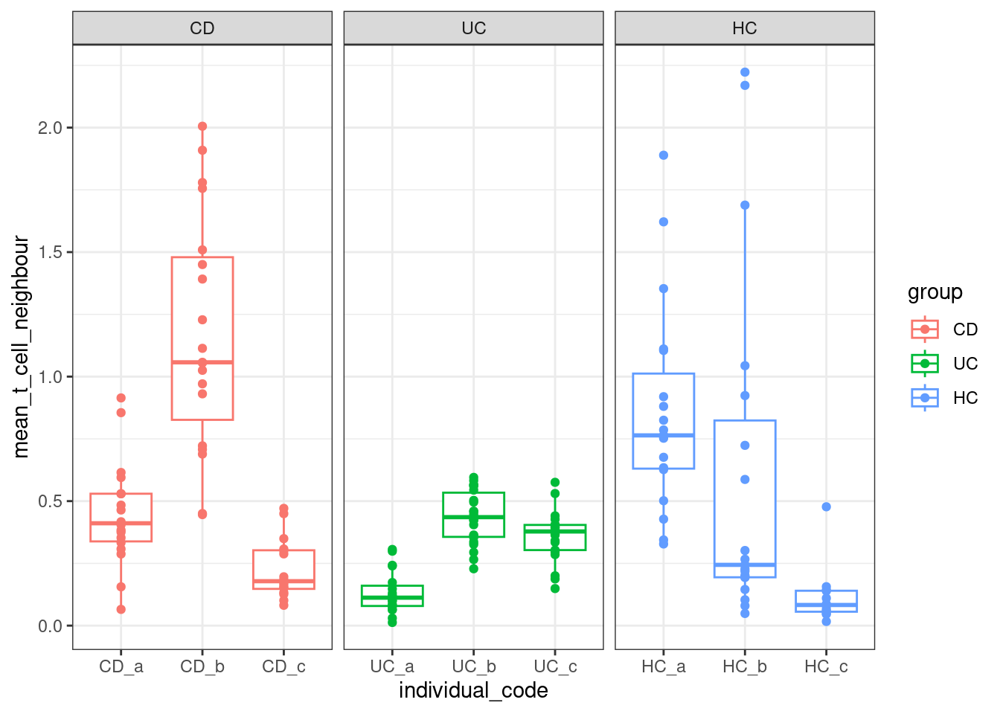
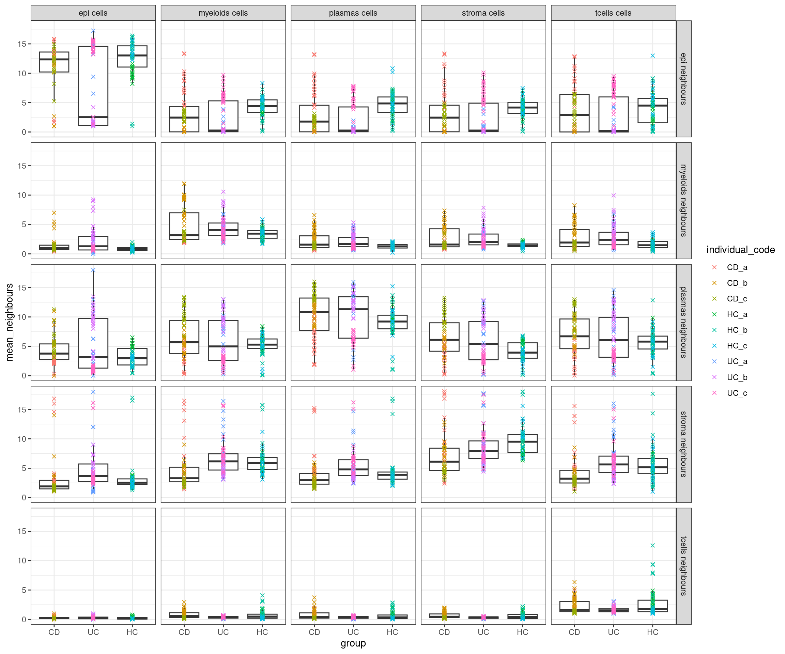
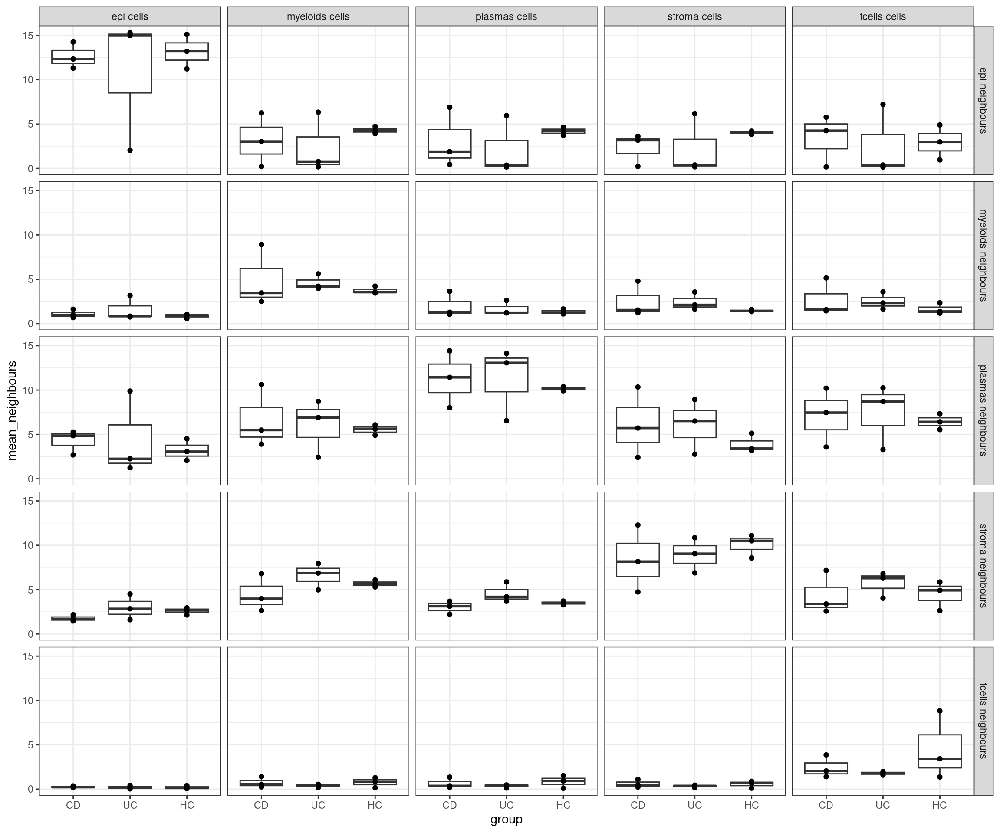

Last updated: 2024-07-29
Checks: 7 0
Knit directory: spatialsnippets/
This reproducible R Markdown analysis was created with workflowr (version 1.7.1). The Checks tab describes the reproducibility checks that were applied when the results were created. The Past versions tab lists the development history.
Great! Since the R Markdown file has been committed to the Git repository, you know the exact version of the code that produced these results.
Great job! The global environment was empty. Objects defined in the global environment can affect the analysis in your R Markdown file in unknown ways. For reproduciblity it’s best to always run the code in an empty environment.
The command set.seed(20231017) was run prior to running
the code in the R Markdown file. Setting a seed ensures that any results
that rely on randomness, e.g. subsampling or permutations, are
reproducible.
Great job! Recording the operating system, R version, and package versions is critical for reproducibility.
Nice! There were no cached chunks for this analysis, so you can be confident that you successfully produced the results during this run.
Great job! Using relative paths to the files within your workflowr project makes it easier to run your code on other machines.
Great! You are using Git for version control. Tracking code development and connecting the code version to the results is critical for reproducibility.
The results in this page were generated with repository version 275b842. See the Past versions tab to see a history of the changes made to the R Markdown and HTML files.
Note that you need to be careful to ensure that all relevant files for
the analysis have been committed to Git prior to generating the results
(you can use wflow_publish or
wflow_git_commit). workflowr only checks the R Markdown
file, but you know if there are other scripts or data files that it
depends on. Below is the status of the Git repository when the results
were generated:
Ignored files:
Ignored: .Rhistory
Ignored: .Rproj.user/
Ignored: analysis/e_neighbourcellchanges.nb.html
Ignored: analysis/figure/
Ignored: analysis/glossary.nb.html
Ignored: renv/library/
Ignored: renv/staging/
Note that any generated files, e.g. HTML, png, CSS, etc., are not included in this status report because it is ok for generated content to have uncommitted changes.
These are the previous versions of the repository in which changes were
made to the R Markdown
(analysis/e_neighbourcellchanges.Rmd) and HTML
(docs/e_neighbourcellchanges.html) files. If you’ve
configured a remote Git repository (see ?wflow_git_remote),
click on the hyperlinks in the table below to view the files as they
were in that past version.
| File | Version | Author | Date | Message |
|---|---|---|---|---|
| Rmd | 275b842 | swbioinf | 2024-07-29 | wflow_publish("analysis/") |
https://www.ncbi.nlm.nih.gov/pmc/articles/PMC6096346/
library(Seurat)
library(tidyverse)
library(DT)
library(patchwork)data_dir <- file.path("~/projects/spatialsnippets/datasets/GSE234713_IBDcosmx_GarridoTrigo2023/processed_data")
seurat_file_01_loaded <- file.path(data_dir, "GSE234713_CosMx_IBD_seurat_01_loaded.RDS")
seurat_file_02_niche <- file.path(data_dir, "GSE234713_CosMx_IBD_seurat_02_niche.RDS")so <- readRDS(seurat_file_01_loaded)When you compute neighbourhood niches, Seurat adds a ‘niche’ column to the cell metadata, but in order to calculate that it also builds the ‘niche’ Assay within the object.
This niche assay is a matrix of cell X celltype - counting how many cells ‘neighbouring’ each cell have which cell type.
So even if you don’t want the defined niches, an easy way to find cell neighbours is to calculate the niches. If you haven’t already.
NB: neighbors.k = 20,
#NB Current version of Seurat doesn't build niche assay accross multiple slides.
# This code will do so. Hope its fixed in future version of Seurat.
source("code/multislide_niche.R")
so <- BuildNicheAssay.using_all_fovs(so, group.by = "celltype_subset",niches.k = 6)
DefaultAssay(so) <- "RNA" # change default assay back to RNA to avoid confusion.
saveRDS(so , seurat_file_02_niche)# reload
so <- readRDS(seurat_file_02_niche)This can take some time to run.
Where the original RNA assay has ~1000 gene features, the niche assay has 5 features - one for each celltype. And that matrix contains for every cell the number of neighbouring cells it has of each cell type.
There are 20 neighbours for each cell, because the BuildNicheAssay parameter neighbours.k was the default of 20.
dim(GetAssay(so, assay="RNA"))[1] 999 354191dim(GetAssay(so, assay="niche"))[1] 5 354191GetAssayData(so, assay="niche", layer='counts')[,1:4]5 x 4 sparse Matrix of class "dgCMatrix"
HC_a_1_1 HC_a_3_1 HC_a_4_1 HC_a_5_1
epi 11 9 17 13
stroma 3 5 1 2
myeloids 6 6 1 4
plasmas . . 1 1
tcells . . . .We might choose to exclude ‘poor quality’ fovs that have few cells. Plotted below, the remaining cells in those FOVs are spaced further apart, so the neighbourhood is less useful. The 200 here is arbitrary.
(Using a method methods that can use maximal distances would avoid this issue)
min_cells_per_fov <- 200
cellcounts <- stack(table(so$fov_name))
colnames(cellcounts) <- c('n_cells','fov_name')
ggplot(cellcounts, aes(x=n_cells, ) )+
geom_density() +
geom_rug() +
geom_vline(xintercept = min_cells_per_fov, lty=2, col='red')+
theme_bw() +
ggtitle("Cells per fov")
Make a table of the fovs that have low counts
cellcount_fov_info <- so@meta.data %>%
group_by(fov_name, orig.ident) %>%
summarise(n_cells = n()) %>%
arrange(n_cells)
DT::datatable(cellcount_fov_info) # A typical sample with reasonable cell counts;
# 1855 cells
so.this <- subset(so, fov_name == 'CD_c_006')
p1 <- ImageDimPlot(so.this,
fov = 'GSM7473690_CD_c', # seurat's fov is slide,
group.by = 'celltype_subset', axes = TRUE)
# 1488 cells
so.this <- subset(so, fov_name == 'HC_a_019')
p2 <- ImageDimPlot(so.this,
fov = 'GSM7473682_HC_a', # seurat's fov is slide,
group.by = 'celltype_subset', axes = TRUE)
p1+p2
# Versus some of these low counts
# 95 cells
so.this <- subset(so, fov_name == 'HC_c_012')
p1 <- ImageDimPlot(so.this,
fov = 'GSM7473684_HC_c', # seurat's fov is slide,
group.by = 'celltype_subset', axes = TRUE)
# 194 cells
so.this <- subset(so, fov_name == 'CD_a_016')
p2 <-ImageDimPlot(so.this,
fov = 'GSM7473688_CD_a', # seurat's fov is slide,
group.by = 'celltype_subset', axes = TRUE)
p1 + p2
Apply filter
#low_count_fov_info <- filter(cellcount_fov_info, n_cells < min_cells_per_fov)
keep_fov <- filter(cellcount_fov_info, n_cells >= min_cells_per_fov) %>% pull(fov_name)
so <- subset(so, cells = colnames(so)[so$fov_name %in% keep_fov])Are there more t-cells near epithelia in different conditions?
plottable <- FetchData(so, vars=c('group', 'individual_code', 'fov_name', 'celltype_subset', "tcells")) %>% filter(celltype_subset == "stroma")
head(plottable) group individual_code fov_name celltype_subset niche_tcells
HC_a_43_1 HC HC_a HC_a_001 stroma 1
HC_a_47_1 HC HC_a HC_a_001 stroma 0
HC_a_55_1 HC HC_a HC_a_001 stroma 0
HC_a_59_1 HC HC_a HC_a_001 stroma 1
HC_a_124_1 HC HC_a HC_a_001 stroma 0
HC_a_192_1 HC HC_a HC_a_001 stroma 0The distribution shown for individual cells.
ggplot(plottable, aes(x=individual_code, y=niche_tcells, col=group)) +
geom_violin() +
facet_wrap(~group, scales = "free_x") +
theme_bw()
And showing averages per fov, grouped by individual sample.
plottable2 <- plottable %>%
group_by(group, individual_code, fov_name, celltype_subset) %>%
summarise(mean_t_cell_neighbour = mean(niche_tcells))ggplot(plottable2, aes(x=individual_code, y=mean_t_cell_neighbour, col=group)) +
geom_boxplot(outlier.shape = NA) +
geom_point() +
facet_wrap(~group, scales = "free_x") +
theme_bw()
Or, more broadly
Note the warning, the FetchData function looks in the cell metadata for these columns, then the default assay (RNA), and then in other assays, finally finding tcells as a column there.
celltypes <- levels(so$celltype_subset)
plottable3 <- FetchData(so, vars=c('group', 'individual_code', 'fov_name', 'celltype_subset', celltypes)) %>%
pivot_longer(cols = starts_with("niche_"), names_to = "neighbour_celltype", values_to = "n_neighbours") %>%
mutate(neighbour_celltype = gsub("niche_","", neighbour_celltype))
plottable4<- plottable3 %>%
group_by(group, individual_code, fov_name, celltype_subset, neighbour_celltype) %>%
summarise(mean_neighbours = mean(n_neighbours)) %>%
mutate(
celltype_subset = paste0(celltype_subset, " cells"),
neighbour_celltype = paste0(neighbour_celltype, " neighbours"),
)
# or by bio replicate
plottable5<- plottable3 %>%
group_by(group, individual_code, celltype_subset, neighbour_celltype) %>%
summarise(mean_neighbours = mean(n_neighbours)) %>%
mutate(
celltype_subset = paste0(celltype_subset, " cells"),
neighbour_celltype = paste0(neighbour_celltype, " neighbours"),
)ggplot(plottable4, aes(x=group, y=mean_neighbours)) +
geom_boxplot(outlier.shape = NA) +
geom_point(mapping=aes(col=individual_code), shape=4) +
facet_grid(neighbour_celltype ~ celltype_subset) +
theme_bw()
ggplot(plottable5, aes(x=group, y=mean_neighbours)) +
geom_boxplot(outlier.shape = NA) +
geom_point() +
facet_grid(neighbour_celltype ~ celltype_subset) +
theme_bw()
❓NOTE: Can you suggest a better approach? Please get in touch.
To formally test this - Do we see more T cells near epithelial cells? Or, conversly, more eipithelial cells near T cells? (Which might be a different question if the T cells are doing something else.)
If so, we expect the proportions of cells in the neighbourhood to change.
Propeller can be use to test changes in cell type proportions between groups. Its not a perfect test, since each cell will be counted as the neighbour of multiple other cells!
neighbour_counts <- AggregateExpression(so,
assays = "niche", data="counts", group.by = "celltype_subset")
# Because there were 20 neigbhbours, reported per cell, each cell is counted 20 times
neighbours.k = 20
sum(neighbour_counts$niche)
sum(neighbour_counts$niche) / neighbours.k # should be n cells
ncol(so)
# Can we just divide by 20 to count each one once? Might reduce overconfidence on stats
# Rounding to get back to integers.
neighbour_count2 <- round(neighbour_counts$niche / neighbours.k)library(limma)
library(speckle)
# condition : Experimental grouping
# fov_name : An unique fov identifier
# individual_code : individual (sample)
# cluster : cell type
props <- getTransformedProps(so$cluster, so$fov_name, transform="logit")
# Make a table of relevant sample information, in same order as props, and check.
sample_info_table <- unique( select(so@meta.data, fov_name, condition, individual_code) )
row_order <- match(colnames(props$TransformedProps),sample_info_table$fov_name)
sample_info_table <- sample_info_table[row_order,]
stopifnot(all(sample_info_table$fov_name == colnames(props$TransformedProps))) # check it
# Extract relevant factors in same order as props
sample <- sample_info_table$individual_code
condition <- sample_info_table$condition
design <- model.matrix( ~ 0 + condition)
dupcor <- duplicateCorrelation(props$TransformedProps, design=design, block=sample)
fit <- lmFit(props$TransformedProps, design=design, block=sample, correlation=dupcor$consensus)
# Contrast called 'test', measuring of test condition vs Control condition.
contrasts <- makeContrasts(test = conditionTest - conditionCon, levels = coef(fit))
fit <- contrasts.fit(fit, contrasts)
fit <- eBayes(fit)
results_table <- topTable(fit, coef='test')
sessionInfo()R version 4.3.2 (2023-10-31)
Platform: x86_64-pc-linux-gnu (64-bit)
Running under: Ubuntu 22.04.4 LTS
Matrix products: default
BLAS: /usr/lib/x86_64-linux-gnu/openblas-pthread/libblas.so.3
LAPACK: /usr/lib/x86_64-linux-gnu/openblas-pthread/libopenblasp-r0.3.20.so; LAPACK version 3.10.0
locale:
[1] LC_CTYPE=en_AU.UTF-8 LC_NUMERIC=C
[3] LC_TIME=en_AU.UTF-8 LC_COLLATE=en_AU.UTF-8
[5] LC_MONETARY=en_AU.UTF-8 LC_MESSAGES=en_AU.UTF-8
[7] LC_PAPER=en_AU.UTF-8 LC_NAME=C
[9] LC_ADDRESS=C LC_TELEPHONE=C
[11] LC_MEASUREMENT=en_AU.UTF-8 LC_IDENTIFICATION=C
time zone: Etc/UTC
tzcode source: system (glibc)
attached base packages:
[1] stats graphics grDevices datasets utils methods base
other attached packages:
[1] patchwork_1.2.0 DT_0.33 lubridate_1.9.3 forcats_1.0.0
[5] stringr_1.5.1 dplyr_1.1.4 purrr_1.0.2 readr_2.1.5
[9] tidyr_1.3.1 tibble_3.2.1 ggplot2_3.5.0 tidyverse_2.0.0
[13] Seurat_5.1.0 SeuratObject_5.0.2 sp_2.1-3 workflowr_1.7.1
loaded via a namespace (and not attached):
[1] RColorBrewer_1.1-3 rstudioapi_0.16.0 jsonlite_1.8.8
[4] magrittr_2.0.3 spatstat.utils_3.0-4 farver_2.1.1
[7] rmarkdown_2.26 fs_1.6.3 vctrs_0.6.5
[10] ROCR_1.0-11 spatstat.explore_3.2-7 htmltools_0.5.8.1
[13] sass_0.4.9 sctransform_0.4.1 parallelly_1.37.1
[16] KernSmooth_2.23-22 bslib_0.7.0 htmlwidgets_1.6.4
[19] ica_1.0-3 plyr_1.8.9 plotly_4.10.4
[22] zoo_1.8-12 cachem_1.0.8 whisker_0.4.1
[25] igraph_2.0.3 mime_0.12 lifecycle_1.0.4
[28] pkgconfig_2.0.3 Matrix_1.6-5 R6_2.5.1
[31] fastmap_1.1.1 fitdistrplus_1.1-11 future_1.33.2
[34] shiny_1.8.1.1 digest_0.6.35 colorspace_2.1-0
[37] ps_1.7.6 rprojroot_2.0.4 tensor_1.5
[40] RSpectra_0.16-1 irlba_2.3.5.1 crosstalk_1.2.1
[43] labeling_0.4.3 progressr_0.14.0 timechange_0.3.0
[46] fansi_1.0.6 spatstat.sparse_3.0-3 httr_1.4.7
[49] polyclip_1.10-6 abind_1.4-5 compiler_4.3.2
[52] withr_3.0.0 fastDummies_1.7.3 highr_0.10
[55] MASS_7.3-60.0.1 tools_4.3.2 lmtest_0.9-40
[58] httpuv_1.6.15 future.apply_1.11.2 goftest_1.2-3
[61] glue_1.7.0 callr_3.7.6 nlme_3.1-164
[64] promises_1.2.1 grid_4.3.2 Rtsne_0.17
[67] getPass_0.2-4 cluster_2.1.6 reshape2_1.4.4
[70] generics_0.1.3 gtable_0.3.4 spatstat.data_3.0-4
[73] tzdb_0.4.0 hms_1.1.3 data.table_1.15.4
[76] utf8_1.2.4 spatstat.geom_3.2-9 RcppAnnoy_0.0.22
[79] ggrepel_0.9.5 RANN_2.6.1 pillar_1.9.0
[82] spam_2.10-0 RcppHNSW_0.6.0 later_1.3.2
[85] splines_4.3.2 lattice_0.22-6 renv_1.0.5
[88] survival_3.5-8 deldir_2.0-4 tidyselect_1.2.1
[91] miniUI_0.1.1.1 pbapply_1.7-2 knitr_1.45
[94] git2r_0.33.0 gridExtra_2.3 scattermore_1.2
[97] xfun_0.43 matrixStats_1.2.0 stringi_1.8.3
[100] lazyeval_0.2.2 yaml_2.3.8 evaluate_0.23
[103] codetools_0.2-20 BiocManager_1.30.22 cli_3.6.2
[106] uwot_0.1.16 xtable_1.8-4 reticulate_1.35.0
[109] munsell_0.5.1 processx_3.8.4 jquerylib_0.1.4
[112] Rcpp_1.0.12 globals_0.16.3 spatstat.random_3.2-3
[115] png_0.1-8 parallel_4.3.2 dotCall64_1.1-1
[118] listenv_0.9.1 viridisLite_0.4.2 scales_1.3.0
[121] ggridges_0.5.6 leiden_0.4.3.1 rlang_1.1.3
[124] cowplot_1.1.3